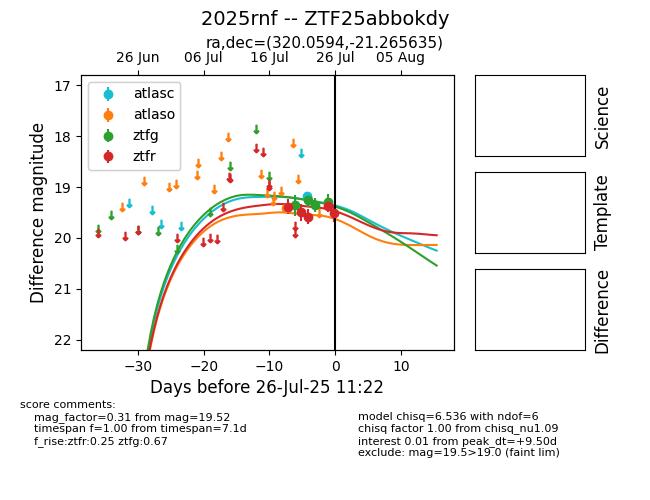

Target 2025rnf at 2025-07-26 11:22, see:
FINK: fink-portal.org/2025rnf
Lasair: lasair-ztf.lsst.ac.uk/objects/2025rnf
ALeRCE: alerce.online/object/2025rnf
TNS: wis-tns.org/object/2025rnf
YSE: ziggy.ucolick.org/yse/transient_detail/2025rnf
alt names
ZTF25abbokdy (ztf,fink)
2025rnf (tns,yse)
coordinates:
equatorial (ra, dec) = (320.0594,-21.26564)
galactic (l, b) = (27.8603,-41.82268)
photometry
last atlasc=19.18, atlaso=19.41, ztfg=19.29, ztfr=19.52
1 atlasc, 1 atlaso, 4 ztfg, 5 ztfr detections
